DJ Transition Engine
The DJ Transition Engine joins two songs that sound very different with a chain of real songs that changes step by step, the way a DJ builds a set. Each of the 100,001 tracks in the shared sample is a node in a k-nearest-neighbour graph built on the 12 standardized audio features. The graph uses k = 15 and Euclidean distance, which leaves 14 neighbours per song once the song itself is dropped, so it has 1,400,014 directed edges. The graph is a single connected component, so every song can reach every other song, and Dijkstra's shortest-path algorithm finds the smoothest chain.
Three demo transitions were run. Adele's Someone Like You to Avicii's Wake Me Up (EDX Miami Sunset Remix) took 9 hops (10 songs) with a total weight of 13.279. Two Ed Sheeran tracks, Nancy Mulligan to New Man, took 3 hops (4 songs) with a total weight of 1.665. The Beatles' Hello, Goodbye (1967) to Dua Lipa's Levitating (2020) took 13 hops (14 songs) with a total weight of 14.968. Tests 1 and 3 both pass through the same three songs in a row, by James Brown, Fela Kuti and Peter Jacques Band. For the website, 50 curated paths are saved in dj_paths.json. 19 of 20 hand-picked pairs were found (Bad Bunny's DAKITI was not in the data). Another 31 pairs were sampled from tracks with popularity of 60 or more, weighted 70% toward pairs from different decades. All 50 pairs were reachable, with hop counts from 3 to 14 (median 9). In a simulated fresh session, reloading the saved graph and song index from disk reproduced exactly the same Test 1 path and weight.
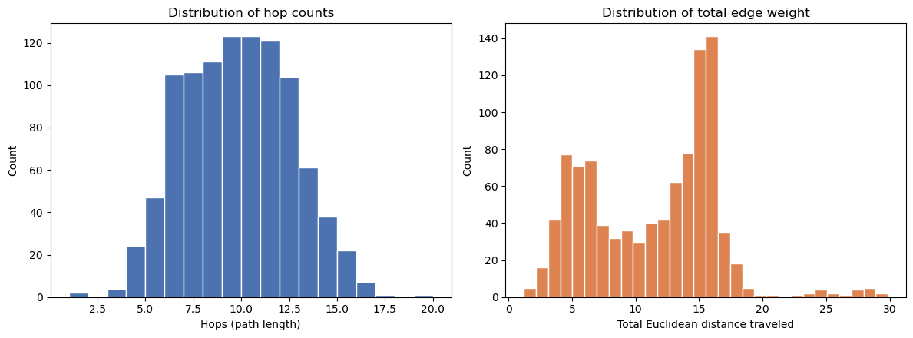
Path lengths across 1000 random pairs
1000 random start/end pairs were drawn, with both songs sampled uniformly from all songs in the graph, and each pair was joined with Dijkstra's algorithm. All 1000 pairs were reachable. The left histogram (blue) counts the hops in each path: mean 9.324, median 9, with a range of 1 to 19 hops. The right histogram (orange) shows the total Euclidean distance travelled along each path: mean 11.373, median 12.517, minimum 1.206 and maximum 29.847.
Hop counts form one roughly bell-shaped hump, and most paths need about 6 to 12 hops. Total distance has two humps instead, a smaller one around 4 to 7 and a taller one around 15 to 16, plus a thin tail out to about 30. The mean total distance (11.373) sits below the median (12.517). The 50 curated website paths have the same median of 9 hops.
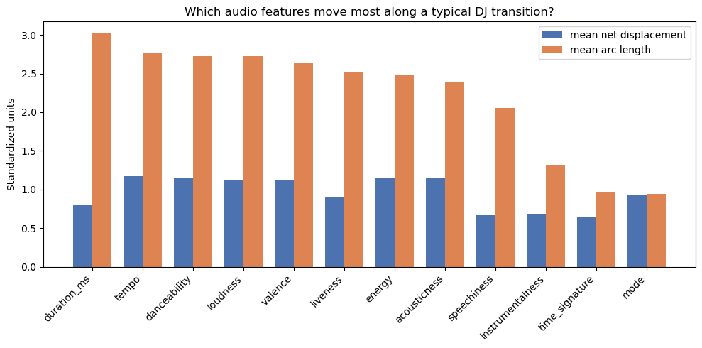
Which features change most along a path
For each of the 1000 random paths, two numbers were measured on every audio feature in standardized units, and the bars show their averages. Net displacement (blue) is how far apart the start and end songs are on that feature. Arc length (orange) adds up the movement on that feature over every hop, so it grows when a path goes back and forth. Features are sorted by arc length, and the top three are duration_ms (track length), tempo and danceability.
No single feature dominates. A group of continuous features, including duration, tempo, danceability, loudness, valence, energy and acousticness, sits close together at about 2.4 to 3.0 units. The notebook points out that track length is one of the axes the graph actively bridges on, not just bookkeeping. Mode, time_signature, instrumentalness and speechiness move far less (about 0.9 to 2.1). The notebook links this to these features being discrete or heavily skewed. Most tracks share the same mode and time signature and have near-zero instrumentalness and speechiness, so there is less standardized distance for a path to cover. Arc length is larger than net displacement for every feature. The gap is widest for duration, and for mode the two bars are almost equal.
Sound Timeline: one feature at a time, 1922-2021
Sound Timeline follows one audio feature at a time across a century of releases, 1922-2021, using the full cleaned dataset of 523,585 tracks rather than the 100k sample. Each feature gets its own trend and one statistical test suited to how that feature behaves. Along the way the module found that 22,317 tracks (4.26% of the catalogue) were not music at all but audiobooks, German-language radio drama (Hörspiel) and other spoken content, and built a reusable rule to remove them.
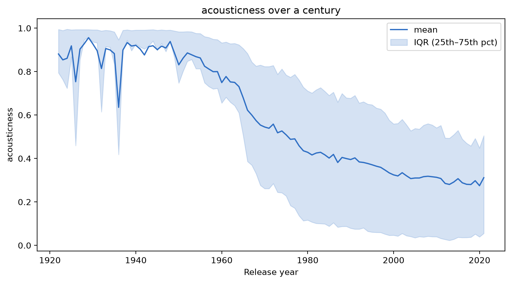
Chapter 0, Setup: raw acousticness over a century
This first look plots the yearly average acousticness (blue line) and the band where the middle half of each year's songs sit (shaded). Up to about 1950 almost everything is acoustic, with the average around 0.9 and the band hugging the top. From the mid-1950s to around 1980 it drops hard, then keeps sliding slowly down to about 0.3. This S-shaped drop is what Chapter 1 fits a curve to.
The band also gets much wider from the 1960s on, so modern music is a real mix of acoustic and electronic tracks, not all one or the other. Sharp dips in 1926, 1932 and 1936 stand out, and Chapter 1 looks into them. The early years are also thin (1922 has only 245 songs), so single years before about 1935 jump around more. This chart uses the data before any non-music cleaning. Chapter 6 later checked acousticness and found the raw and cleaned yearly means correlate at 0.991, though a single year can shift by up to 0.221.
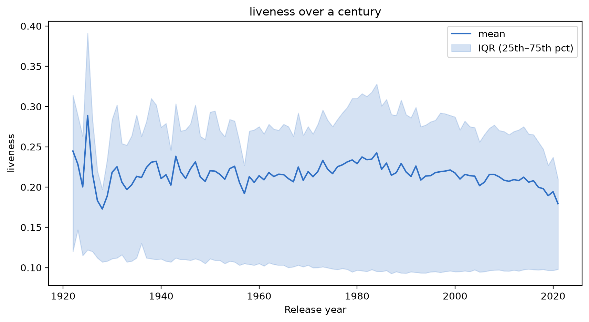
Chapter 0, Setup: raw liveness stays flat
Liveness barely moves across the century. The yearly average stays around 0.21-0.23 for most of it and only dips a little after 2010, to about 0.18 in 2021. The lower edge of the band sits near 0.10 the whole way, while the average sits in the upper half of the band.
The median (about 0.12-0.20) is lower than the mean, so most songs sound like studio recordings and a smaller number of truly live ones pull the average up. With no real trend to test, Chapter 3 compares live and studio versions of the same song instead. Chapter 6 later found liveness more sensitive to non-music content than expected (raw versus cleaned correlation 0.752), concentrated in the 1980s German radio-drama years, and this raw chart still includes that content.
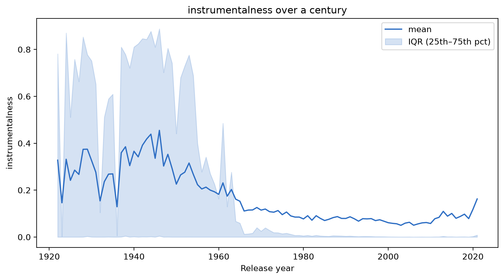
Chapter 0, Setup: raw instrumentalness collapses after 1960
Before about 1955 instrumentalness is all over the place. The average sits between 0.2 and 0.45 and the band stretches from 0 to about 0.8, so fully instrumental tracks sat next to songs with vocals. After about 1960 it collapses, and by 1970 even the 75th percentile is only 0.025, so nearly every song has vocals.
From the mid-1960s the mean line even floats above the whole shaded band. The median is basically 0 from 1960 onwards, so the mean is a poor summary for this feature, which is why Chapter 4 uses the share of songs above a cutoff instead. There is a small bump at the very end (0.16 in 2021), but it covers only a year or two and 2021 is a partial year, so not much is read into it.
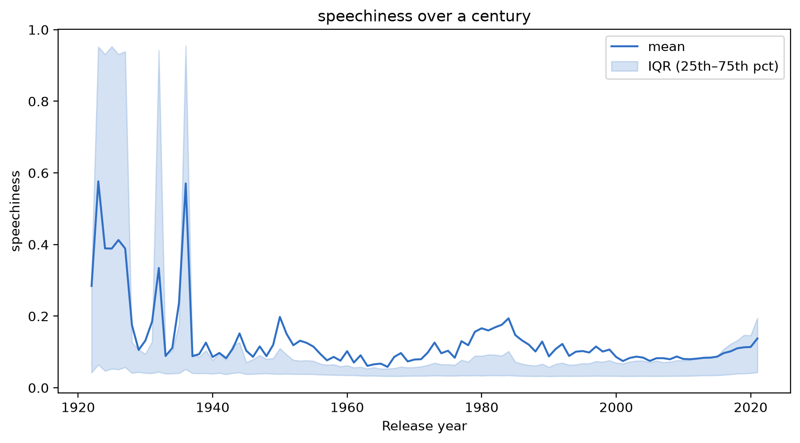
Chapter 0, Setup: raw speechiness, before cleaning
This is speechiness on the raw data, before any cleaning. The first thing to notice is three huge spikes before 1937, with the yearly mean reaching about 0.58 and the band stretching up to about 0.95. There is also a bump through the late 1970s and 1980s, peaking near 0.19 in the mid-1980s, and a climb at the very end, from 0.080 in 2010 to 0.138 in 2021.
Chapter 2 traced the early spikes to narrated audiobooks labeled with the original book's publication year instead of a real recording date. In 1923, for example, the median speechiness was 0.936. The 1980s bump mostly disappeared once German-language radio drama (Hörspiel) was removed, since over 10% of that decade's catalogue was Hörspiel, not music. Only the rise after 2010 survived cleaning, so this raw chart is not the real speechiness story.
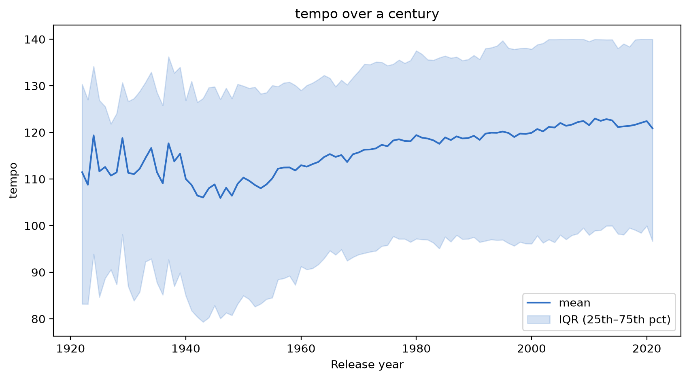
Chapter 0, Setup: raw tempo over a century
This plots the raw yearly average tempo in beats per minute, with the middle half of songs shaded. The average is noisy before 1950 and lowest in the mid-1940s, around 106, then climbs steadily to about 120 by 1980 and sits near 121-123 through the 2010s. The band is widest around the 1940s, reaching from roughly 80 to 130, and later shifts upward with its top edge near 140.
Chapter 5 studies the spread of tempo, not the average, and only after cleaning. This raw chart still includes 302 zero-tempo tracks (ambient noise recordings) and the audiobook and radio-drama content, which made up 27% of the 1920s raw tempo data. Before cleaning the 1960s looked like the narrowest decade, but after cleaning the 1920s became narrowest (IQR 32.9 BPM) and the 1940s stayed widest (IQR 47.0 BPM). Chapter 6 also warns that because several features drift over the century, yearly tempo and acousticness look strongly linked (correlation −0.85), but the link drops to −0.04 once year-to-year changes are compared.
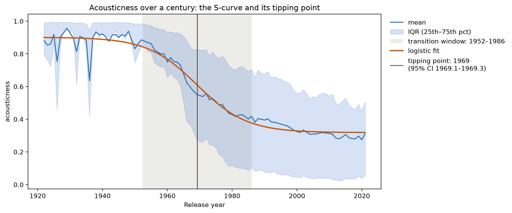
Chapter 1, Acousticness: the S-curve tips in 1969
An S-shaped (logistic) curve, in orange, was fitted to the 100 yearly mean values, one per year, so busy decades like the 1990s do not take over. The middle of the S, marked by the vertical line, is the tipping point: 1969, with a 95% bootstrap confidence interval of 1969.05 to 1969.34 (rounded to 1969.1–1969.3 in the legend). The grey window marks the transition, which ran for about 34 years, from roughly 1952 to 1986, as acousticness fell from about 0.90 to 0.32.
The curve explains 97% of the year-to-year variation (R² = 0.971). 1969 is the middle of the change, not a sudden switch, and the whole drop took about a generation. Acoustic music did not disappear either, since the band shows modern songs covering everything from fully acoustic to fully electronic. This is a timeline, not a cause: electric guitars, synths and studio production are plausible reasons, but none were tested.
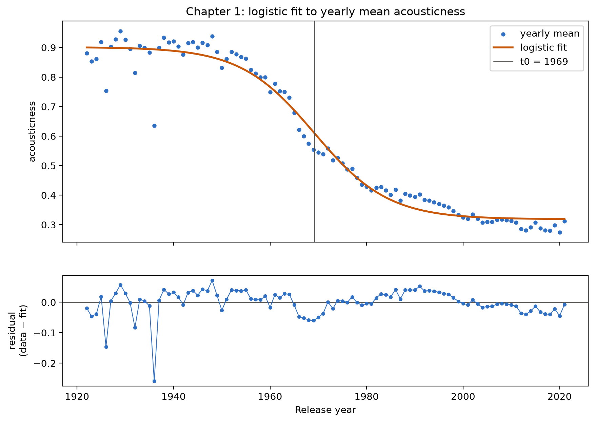
Chapter 1, Acousticness: checking the fit
The top panel shows the yearly means (dots) and the fitted curve, which looks close at first glance. The bottom panel shows the residuals, the data minus the curve for each year. If the S-shape were right these would scatter randomly around zero, but they come in long waves instead: above zero through the 1940s-50s, below in the late 1960s, above again in the 1980s-90s, and below from the mid-2000s.
So the real change was lopsided: it held on through the 1950s, dropped very hard in the late 1960s, then crept down slowly and still has not flattened out. The 2010s sit around 0.28-0.30, below the curve's floor of 0.32, and a symmetric S-curve cannot match both the sharp drop and the slow tail. The big early misses differ: in 1926 and 1932 a batch of unusual low-acousticness tracks pulls the mean down while the median stays around 0.95, but 1936 is low across the board (mean 0.64, median 0.60).
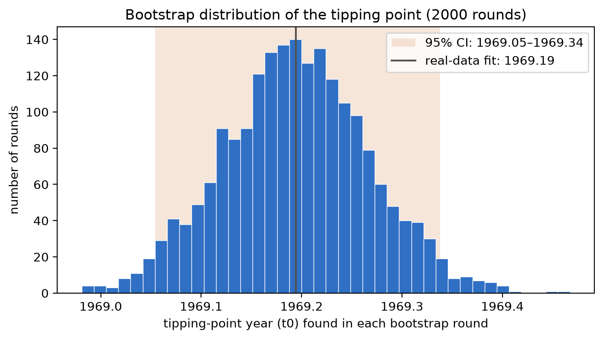
Chapter 1, Acousticness: how sure is 1969?
To test how stable the tipping point is, songs were resampled within each year 2,000 times and the curve was refitted each time. All 2,000 refits worked, and the tipping point only moved between 1969.0 and 1969.5. The histogram is one clean hump around the real-data fit of 1969.19, with the shaded 95% interval running from 1969.05 to 1969.34.
There is no second hump, so no refit landed on a different solution. But the tiny interval only means a different random set of songs would not change the answer, which is expected with 523,585 songs. It says nothing about whether an S-curve is the right shape, and the residuals say it is not quite. So "late 1960s" is a much safer claim than "1969.2".
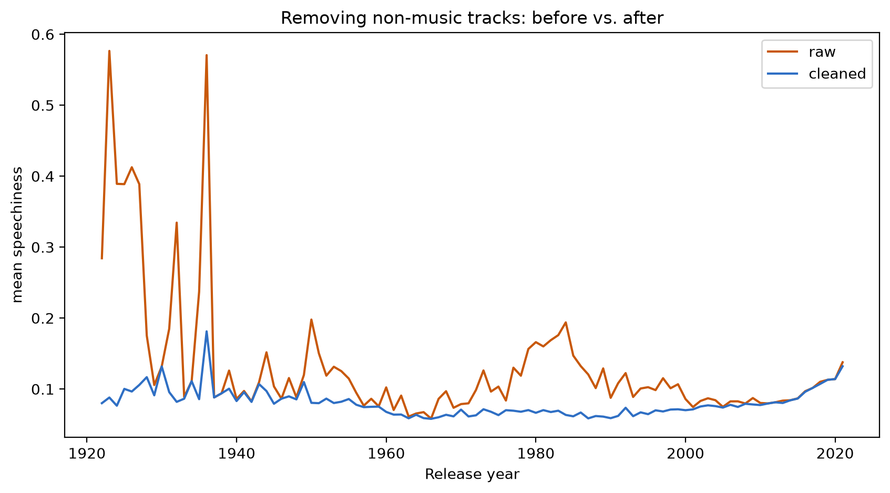
Chapter 2, Speechiness: removing non-music tracks
The orange line is the raw yearly mean speechiness and the blue line is the same measure after non-music tracks were removed. The early spikes of up to about 0.58 mostly vanish, though 1936 still stands out at about 0.18 in the cleaned line. The raw bump through the late 1970s and 1980s also disappears, and after cleaning that stretch is a stable 0.06-0.07. From the 2000s on the two lines nearly overlap, including through the rise of the 2010s.
The cleaning took three passes: a title rule ("Chapter" plus a number), a language-independent per-artist rule, and finally a set of 19 genre tags, such as hoerspiel, reading, comedy and poetry, whose median speechiness sits between 0.82 and 0.95, with the next-highest tag far below at 0.67. In total 22,317 tracks (4.26% of the catalogue) were removed, including 7,830 from the 1980s alone, over 10% of that decade. Across all 100 years the raw and cleaned yearly means correlate at only 0.434, so the raw trend was an unreliable summary of what music was doing.
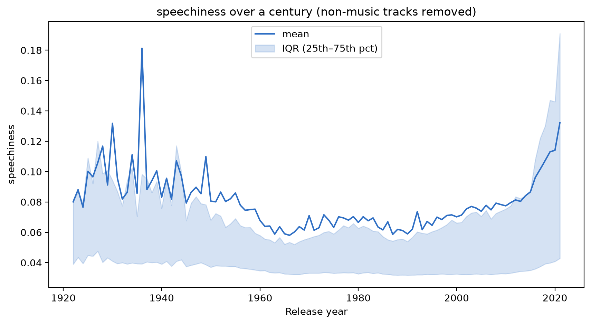
Chapter 2, Speechiness: the cleaned trend
Once non-music tracks are out, speechiness holds essentially flat, around 0.06 to 0.09, for roughly ninety years. The one change that survives is a gradual rise from about 2010, with the yearly mean going from 0.077 in 2010 to 0.132 in 2021. The shaded band also widens sharply at the very end, so the catalogue became more varied, not just shifted upward.
This rise barely moved with cleaning (0.080 to 0.138 in the raw data), because the radio-drama content had largely left the catalogue by the 2010s. It is consistent with rap and hip-hop's rise to the mainstream, but genre was not tested directly, so that cause is not established. The early decades are noisier because of small samples. 1936 still runs warm (mean 0.18, against a baseline of about 0.09), which Chapter 2 traces to 220 narrated tracks credited to a name shared with a 1960s rock band, so they carry that band's music genre tag. This case was left as is rather than fixed by hand.
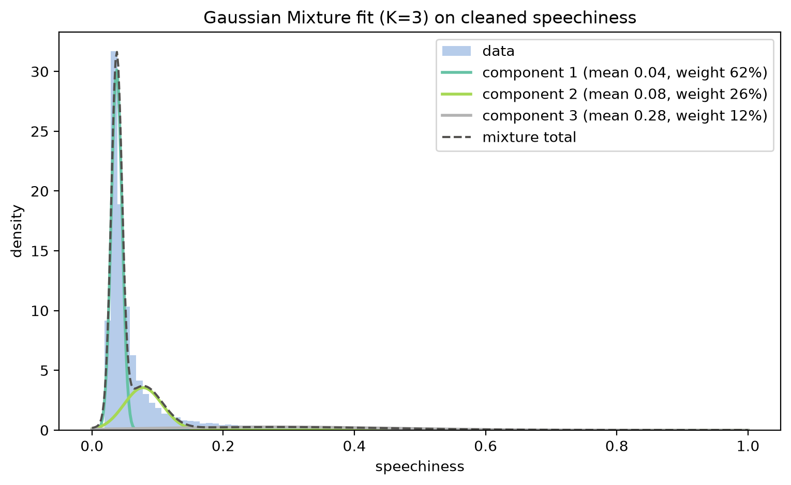
Chapter 2, Speechiness: three groups, not two
A Gaussian Mixture Model was fitted to all cleaned speechiness values with two and with three components, and BIC (lower is better) strongly preferred three: −2,075,294 versus −1,921,335. Over the histogram, the three fitted curves pick out a tall, narrow peak of plain sung music near 0.04 (62% of songs), a smaller "a bit talky" group near 0.08 (26%), and a wide, low speech-heavy group centred at 0.28 (12%). The dashed mixture total follows the histogram's main peak and the shoulder to its right.
So speechiness is not a clean sung-versus-spoken split but three tiers, with 88% of all music in the first two low-speechiness groups. The third component is very wide (spread 0.182, against 0.008 for the first), which is why its grey curve lies almost flat along the bottom. One symmetric bell curve is stretching to cover everything from lightly talky tracks to near-pure narration, so its exact mean and spread are descriptive, not precise.
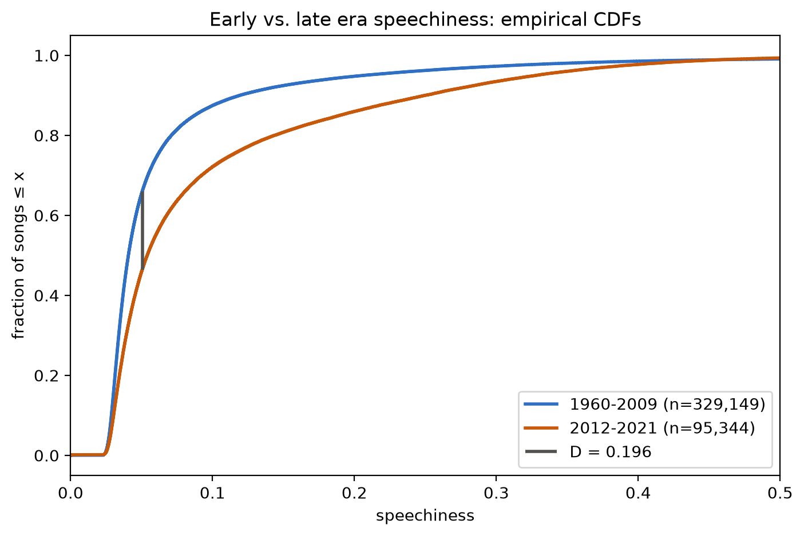
Chapter 2, Speechiness: did the distribution shift?
Each line shows the fraction of songs at or below a given speechiness, for the stable 1960-2009 baseline (blue, 329,149 songs) and for 2012-2021 (orange, 95,344 songs). The orange curve sits to the right of the blue one across almost the whole range, so modern songs tend to have higher speechiness. The short dark bar marks the biggest vertical gap between the curves, the Kolmogorov-Smirnov statistic D = 0.196.
D = 0.196 is a real, moderate-sized gap, not a tiny wrinkle that a huge sample can make look significant; the p-value is ≈ 0, which on its own means little at this size. Mean speechiness moved from 0.068 to 0.099 between the two eras, about a 46% relative increase. The era split was chosen after seeing the cleaned trend, with 2010-2011 left out as a buffer, and the test shows that the eras differ, not why.
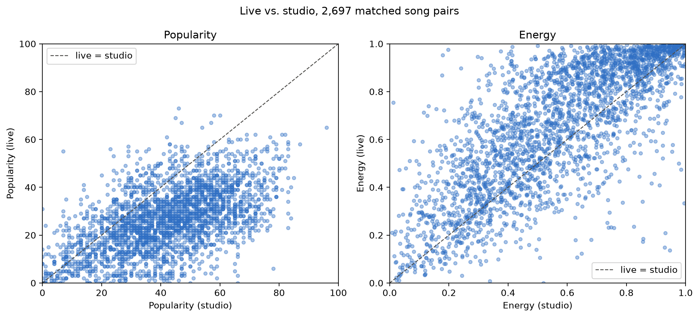
Chapter 3, Liveness: live versus studio, song by song
Liveness itself stays flat across the century, so this chapter compares the studio and live recordings of the same song by the same artist. Each dot is one song, with the studio value on the x-axis, the live value on the y-axis, and a dashed line where both are equal. In the popularity panel most dots fall below the line, while in the energy panel most fall above it.
Energy is higher in the live version in 72% of pairs (mean difference +0.087, Wilcoxon p = 1.2 × 10⁻¹³⁸). Popularity is higher live in only 15% of pairs (mean difference −15.7 points out of 100, p ≈ 0). The pairs came from 9,663 tracks with a "(Live...)" or "- Live..." marker in the title, each matched to a studio track by the same artist with the same base title, keeping one pair per song.
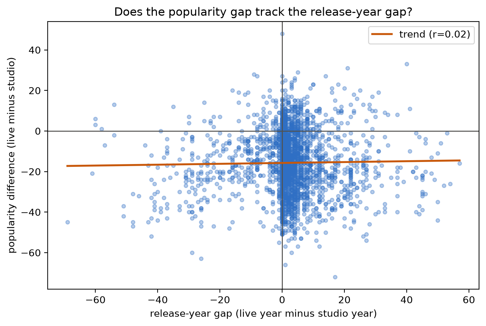
Chapter 3, Liveness: is the popularity gap about release timing?
One worry was that live versions often come out later, so they may simply have had less time to collect streams. If so, the popularity gap should grow as the release-year gap grows. It does not: the cloud sits at roughly the same, mostly negative height across the whole x-axis, and the orange trend line is nearly flat (r = 0.018, p = 0.36).
Pairs released within two years of each other still show a mean popularity gap of −15.1, and pairs more than ten years apart show −18.1, both close to the overall −15.7. Most pairs sit in a dense stripe just right of zero (median gap 2 years), though 24% are more than 10 years apart. This rules out release timing, and the most plausible reading is that the studio version acts as the default while the live recording is a fan-facing extra, but this data cannot prove that specific reason.
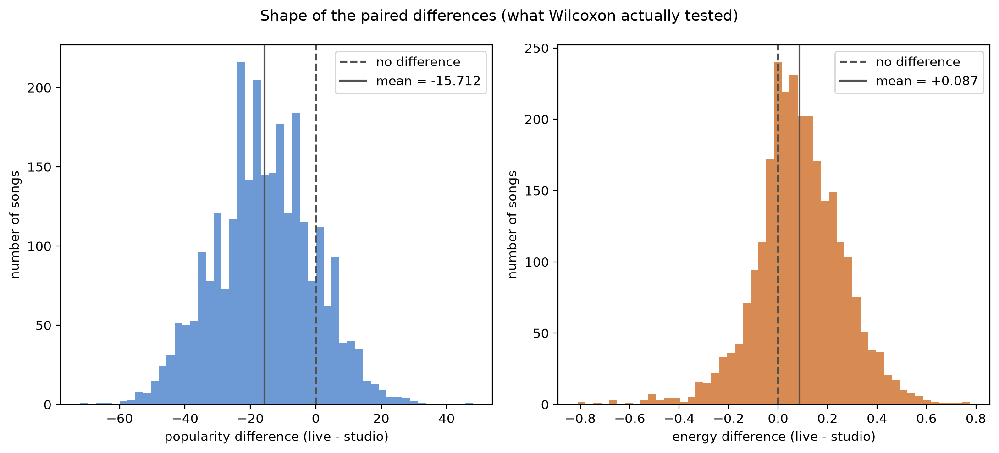
Chapter 3, Liveness: shape of the paired differences
These histograms show how large the live-minus-studio differences are, which is closer to what the Wilcoxon test actually ranks. The dashed line marks no difference and the solid line marks the mean. Popularity differences (blue, mean −15.712) mostly sit between −40 and 0, while energy differences (orange, mean +0.087) form a roughly symmetric hump just right of zero.
The popularity drop is broad and shared across most songs, not a few extreme outliers dragging the mean down. The energy gain is real but usually modest per song, with most pairs differing by less than ±0.3. Both results describe recordings as Spotify measures them, not how a concert feels in person, and the title rule will miss live versions that have no "Live" in the title.
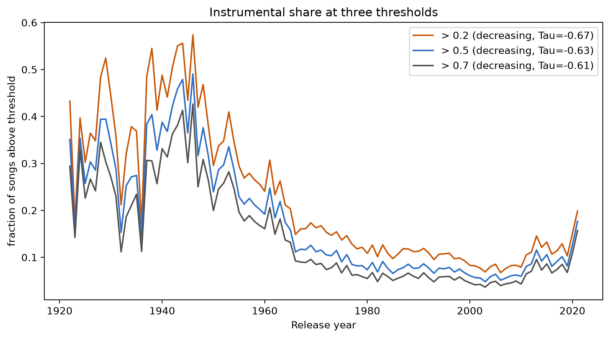
Chapter 4, Instrumentalness: the decline holds at all three cutoffs
Most songs score near zero on instrumentalness, so this chapter counts the share of songs above a cutoff each year instead of taking an average. The main cutoff, 0.5, is Spotify's own "likely instrumental" line and sits at a real gap in the data (75.5% of songs are near zero, 11.4% are above 0.5). This chart repeats the count at 0.2 (orange), 0.5 (blue) and 0.7 (dark grey), and a Mann-Kendall test finds a decreasing trend at all three (Tau −0.675, −0.633 and −0.615).
The three lines differ in height but share the same shape: high and jumpy before about 1950, a long fall, a low point in the early 2000s and an upturn toward 2021. Their average levels are 22.6%, 17.8% and 14.5%, which simply scales with how loose the cutoff is. So the choice of cutoff changes the numbers, not the conclusion.
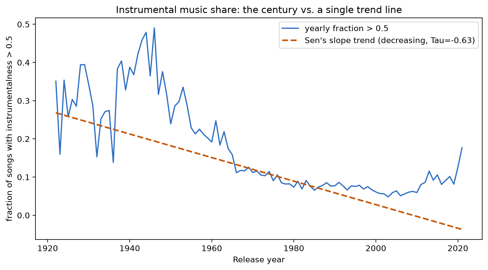
Chapter 4, Instrumentalness: a decline that reversed
The blue line is the share of songs scoring above 0.5 each year. It peaks at 49.1% in 1946, falls to 4.8% in 2003, and climbs back to 17.7% by 2021. The orange dashed line is the single trend summarised by the Mann-Kendall test (the Hamed-Rao version, which adjusts for the series' slow multi-decade swings): decreasing, Tau = −0.633, p = 4.5×10⁻⁴, Sen's slope = −0.00308 per year.
The trend line is drawn straight through the data on purpose, and it fits badly: it sits far below the 1940s peak, where the data reach 0.4 to 0.49, and drops below zero by 2021, which is impossible for a share. It only follows the data between about the late 1960s and the mid-1980s. The test is right about the net direction, but the real story is a 60-year decline (1947 to 2007) between a mid-century peak and a partial modern recovery. One correction from Chapter 6: the full non-music cleaning moves this series more than Chapter 4's quick check suggested (largest single-year gap 0.210, not 0.033).
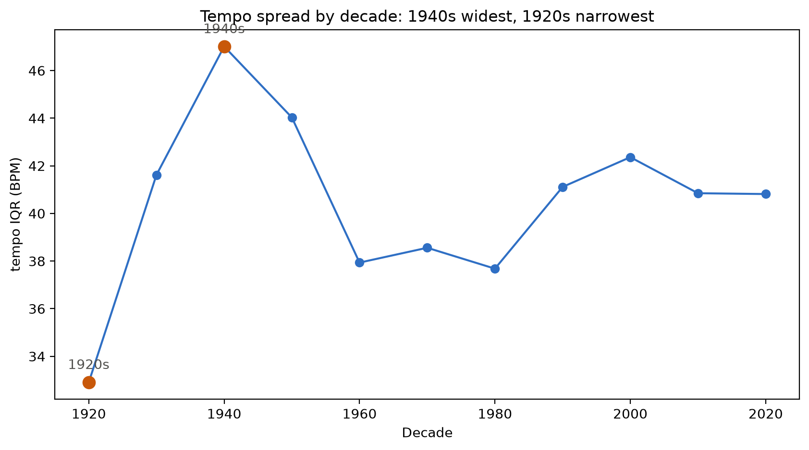
Chapter 5, Tempo: how much tempos vary, decade by decade
This chapter asks whether the spread of tempos within a decade changed, not whether songs got faster or slower. Each point is the interquartile range (IQR), the width of the middle half of that decade's tempos, with the extremes in orange: the 1940s widest at 47.0 BPM and the 1920s narrowest at 32.9 BPM. Levene's test across all eleven decades is highly significant (W = 105.8, p = 1.0×10⁻²²⁰), and a direct test of the 1940s against the 1920s confirms the gap is real (W = 56.1, p = 7.1×10⁻¹⁴). With groups this large the p-value alone says little about how big the difference is, so the IQR values are the real answer to that.
After the 1940s peak, spread falls to about 38 BPM from the 1960s to the 1980s, then sits in a fairly stable band of about 40 to 42 BPM from the 1990s on. Cleaning changed the answer, not just the numbers: before 22,595 tracks (4.3%) were removed, mostly mislabelled spoken audio plus 302 zero-tempo noise tracks, the 1960s looked narrowest, because 27% of the 1920s' raw tempo data was not music. The wide 1940s line up with Chapter 4's instrumentalness peak in 1946, a plausible but unproven connection that the project ties to the big-band and orchestral era.
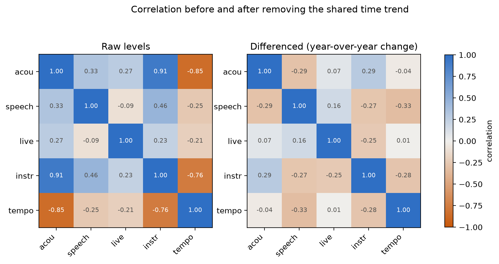
Chapter 6, Synthesis: correlations that mostly vanish once the time trend is removed
Each grid compares the five cleaned yearly series (acousticness, speechiness, liveness, instrumentalness share and tempo), with blue for positive correlation and orange for negative. On raw yearly levels (left), acousticness and instrumentalness look almost perfectly correlated (0.91) and acousticness and tempo almost perfectly opposed (−0.85). After differencing, which uses each year's change instead of its level (right), those fall to 0.29 and −0.04.
This is the shared-drift trap: any two series that drift over 100 years look correlated, and the chapters had already shown these features change at very different times. Instrumentalness with tempo also weakens, from −0.76 on raw levels to −0.28 after differencing. On the differenced side nothing goes beyond 0.33 in either direction; the strongest value is speechiness with tempo at −0.33, slightly stronger than its raw −0.25.
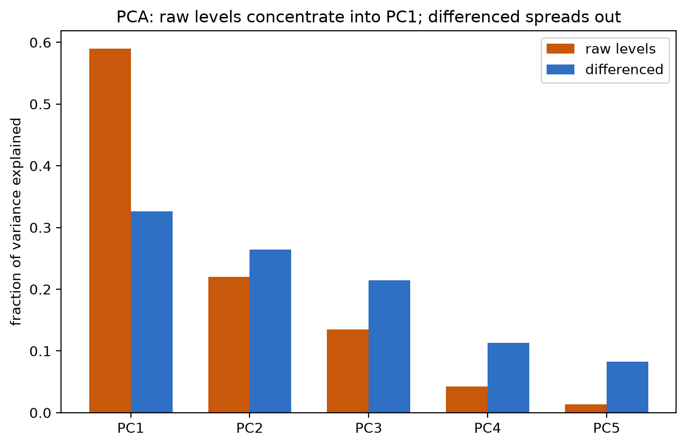
Chapter 6, Synthesis: one shared shift, or several?
Principal component analysis (PCA) asks how many combined directions are needed to describe the five standardised series. If one cultural shift drove everything, the first component would explain most of the variation. On raw levels it explains 59%, the signature of everything drifting together. On the differenced series it explains only 33%, and three components are needed to reach 80%.
From PC2 onward the blue bars are taller than the orange ones, so the variation spreads out once the shared drift is removed. The project reads this as mostly independent stories, though not perfectly independent ones. The loadings of the differenced series show what shared structure remains: on PC1, acousticness (+0.49) and instrumentalness (+0.59) sit against speechiness (−0.56) and liveness (−0.32), while tempo sits at almost exactly zero (−0.004). Tempo instead dominates PC2 on its own (+0.80).
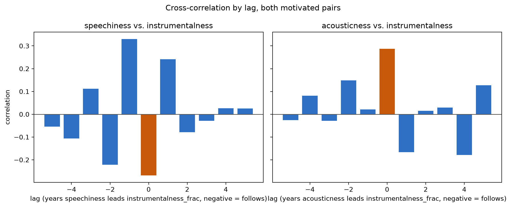
Chapter 6, Synthesis: no clear leader in the lead-lag test
Granger causality tests asked whether past changes in one feature help predict changes in another, for two pairs: speechiness with instrumentalness, suggested by the project's own guidance, and acousticness with instrumentalness, which move together in the PCA. Neither pair gave a result that was both significant and steady across lags; the closest, instrumentalness's past predicting speechiness, reached p = 0.041 at a one-year lag but was gone by lag 3 (p = 0.22). This chart shows the same question as a shape: a positive lag means the first feature leads instrumentalness, a negative lag means it follows, and the orange bar is the same-year correlation.
If one feature truly led the other, one lag would stand out clearly from its neighbours, and neither panel shows that. For speechiness and instrumentalness the value swings from +0.33 at lag −1 to −0.22 at lag −2 and back up to +0.24 at lag +1; in the acousticness panel the tallest bar is the same-year one, and the bars around it also flip between positive and negative. With only 99 years of year-over-year changes, the result is read as weak predictive precedence at best, never causation.
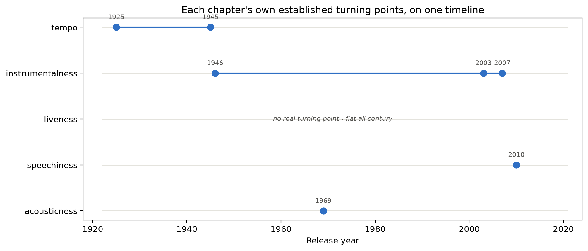
Chapter 6, Synthesis: every turning point on one timeline
This chart needs no new test. Each dot is a year already backed by its own chapter's test: acousticness's tipping point in 1969, instrumentalness's peak, trough and recovery in 1946, 2003 and 2007, and speechiness's real shift from about 2010. The tempo dots, drawn at 1925 and 1945, stand for the narrowest and widest decades of tempo spread, and liveness has no dot because it never really changed across the century.
Overall the points do not line up: they fall in different decades and are different kinds of moment (a tipping point, a peak, trough and recovery, an era boundary, and a pair of extreme decades). The project calls this the clearest single piece of evidence in the synthesis chapter for independent stories rather than one shared shift. The two closest pairs are tempo's widest decade next to instrumentalness's 1946 peak, a plausible but unproven link, and instrumentalness's 2007 recovery next to speechiness's 2010 shift, which the project says does not obviously drive or follow it.
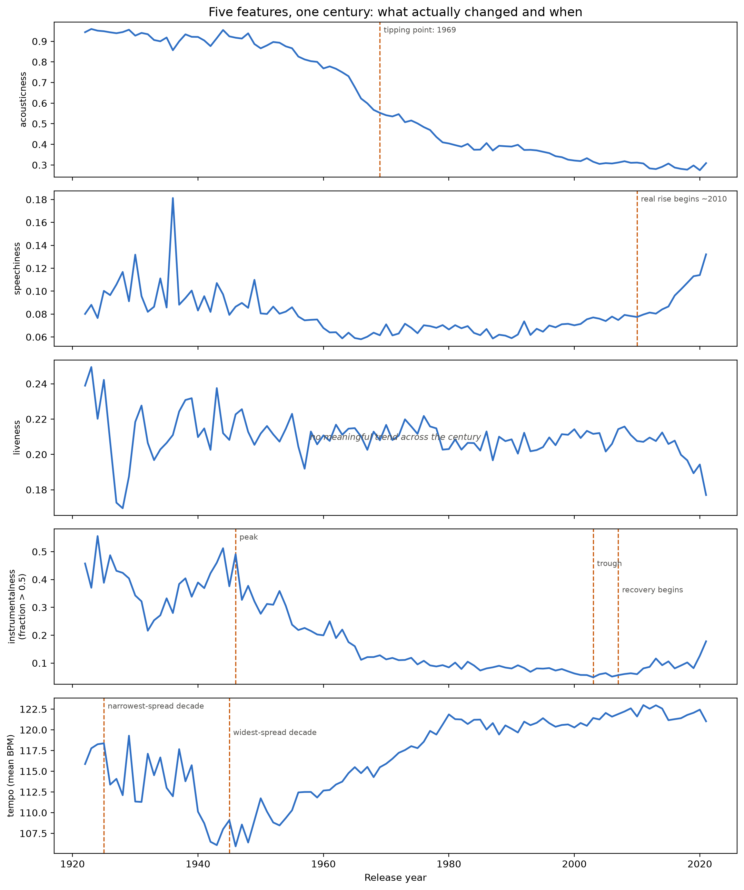
Showcase: the century at a glance
Like all four showcase charts, this is a new view of results already established and tested in the chapters, not a new finding. It stacks the five cleaned yearly series on one time axis and marks each chapter's turning points with orange dashed lines. Acousticness falls from a plateau near 0.90 to one near 0.32 with its 1969 tipping point marked, speechiness stays mostly flat until a real rise from about 2010, and instrumentalness is marked at its 1946 peak, 2003 trough and 2007 recovery.
The liveness panel has no marker on purpose and is labelled "no meaningful trend across the century". The tempo panel plots mean BPM, which bottoms out in the 1940s and levels off near 120 BPM from about 1980; its two dashed lines mark Chapter 5's narrowest-spread (1920s) and widest-spread (1940s) decades, since that chapter tested spread, not the mean. On this cleaned series the instrumentalness curve also climbs above the marked 1946 peak in the mid-1920s; the marker shows the peak year established in Chapter 4. The leftover speechiness spike in 1936 (about 0.18 against a baseline near 0.09) is a known issue left in on purpose: 220 narrated tracks share their credited artist name with a 1960s rock band, inherit its genre tag, and so slip past the cleaning rule.
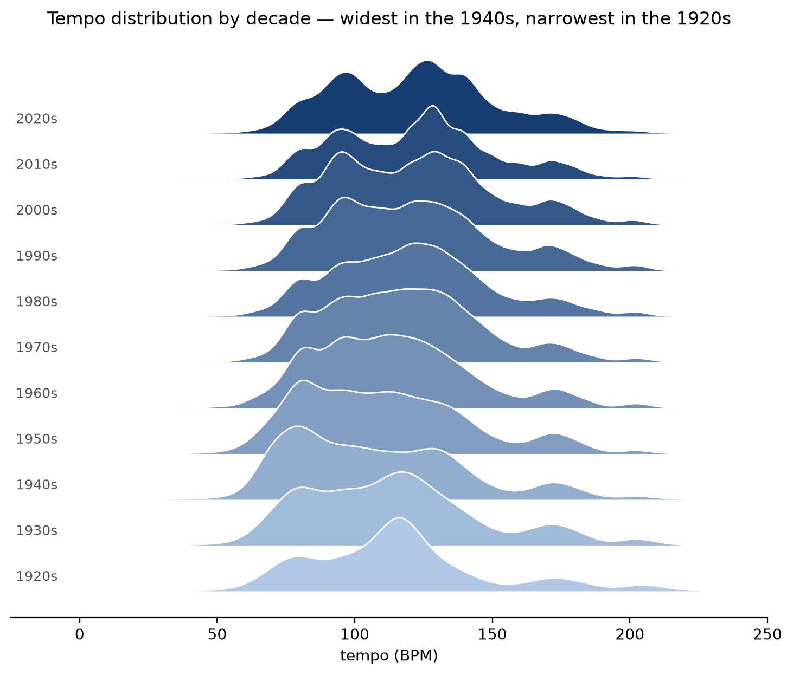
Showcase: tempo distributions as a ridgeline
This is the same comparison Chapter 5's Levene's test made, shown as a shape rather than an IQR number, and like the other showcase charts it adds no new finding. Each curve is one decade's spread of tempos, with colour running from light (oldest) to dark (newest). Every curve is scaled to the same peak height, so compare widths and shapes, not heights.
The 1920s curve has one tall, narrow main peak near 115 BPM, with only a low hump near 80 BPM, matching its narrowest IQR of 32.9 BPM. The 1940s curve is the broadest, with a hump near 80 BPM and a long shoulder out to about 130 BPM, matching its widest IQR of 47.0 BPM. The 2010s and 2020s curves show two clear humps, near 95 and near 125 to 130 BPM, and every decade has a small bump around 170 BPM.
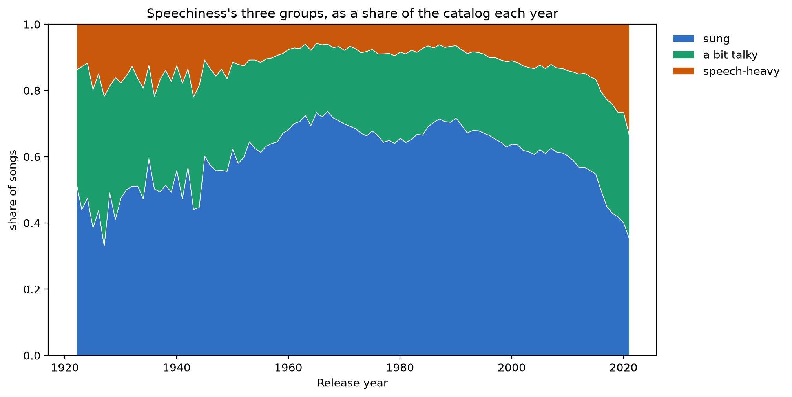
Showcase: speechiness's three groups over time
Chapter 2 found that cleaned speechiness is better described by three groups than by two: mostly sung (62% of songs, mean 0.04), a bit talky (26%, mean 0.08) and speech-heavy (12%, mean 0.28). Here the same three-group model is refit and plotted as each group's share of the catalogue by year, so the modern shift appears as a growing band rather than a single number. It is a new view of an existing result, not a new finding.
From the 1960s to about 1990 the sung group holds roughly 64 to 74% of each year and the speech-heavy band stays thin. After about 2015 the sung share drops steeply, to about 35% in 2021, while the speech-heavy band grows to about a third. This matches Chapter 2's moderate shift between 1960 to 2009 and 2012 to 2021 (KS D = 0.196), which is consistent with rap and hip-hop's rise to the mainstream but not tested by genre. The pre-1950 years are jumpier, with smaller sung shares.
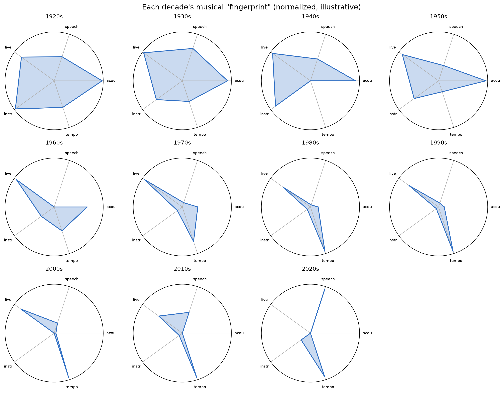
Showcase: decade fingerprints (illustrative)
Each decade gets a small radar chart with five axes: acousticness, speechiness, liveness, instrumentalness share and mean tempo. Each feature is min-max scaled across the eleven decades, so the lowest decade sits at the centre and the highest at the edge. The project flags this as the most decorative of the four showcase charts: it is illustrative, not a fifth analytical result, and not a substitute for the tests in Chapters 1 to 5.
The 1920s to 1950s shapes are broad and reach toward acousticness, liveness and instrumentalness, with the 1940s sitting at zero on tempo. From the 1970s on, acousticness and instrumentalness collapse toward the centre and the shapes stretch toward tempo, and the 2020s is the only decade that reaches the edge on speechiness. Radar charts can exaggerate differences depending on axis order, and the 0-to-1 scaling stretches even small ranges, such as liveness's narrow band, to fill the axis, so these shapes are for visual comparison only.
Music Tribes Explorer
The Music Tribes Explorer asks what natural groups of music appear when only sound defines them. K-Means was run on the 12 standardized audio features of 100,001 tracks, with no genre, artist, year or popularity in the model, and k = 6 was chosen, giving six named tribes. The tribes were then checked against artist genre labels, followed across decades, mapped in 2-D with PCA and UMAP, and tested again on the 10 continuous features alone. Silhouette is low (0.161), so the tribes are regions of a continuum rather than separate islands, and they reflect production and instrumentation rather than genre.
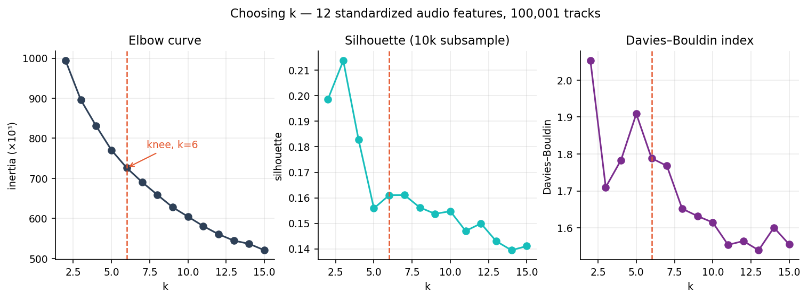
Choosing the number of tribes
K-Means was fitted for every k from 2 to 15 on all 100,001 tracks. The left panel shows inertia falling as k grows, with the elbow (knee) at k = 6. The middle panel shows silhouette on a fixed 10,000-track subsample, which peaks at k = 3 (0.214). The right panel shows the Davies–Bouldin index, where lower is better, and the dashed line in every panel marks the chosen k = 6.
The criteria disagree. The k = 3 solution only separates acoustic, loud-energetic and instrumental music, which is too coarse for an explorer. At k = 8 a 1,268-track cluster appears that is defined by time_signature = 0, a Spotify encoding artifact, and from k = 9 the smallest cluster collapses to about 300 tracks. k = 6 is the elbow, ties k = 7 on silhouette (0.1610 vs 0.1611) and is the largest k with no artifact cluster. Silhouette stays low (about 0.16) throughout, which the report treats as a finding in itself: music forms a continuum, not isolated groups.
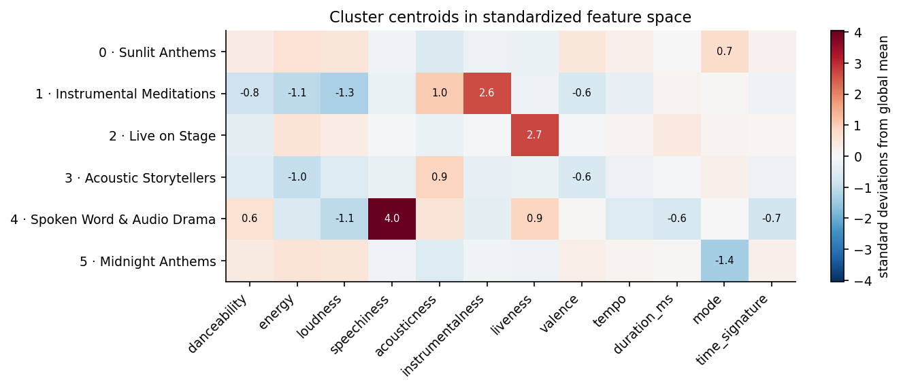
What defines each tribe
Each row is one tribe and each column is one audio feature. Red cells are above the overall average and blue cells are below, measured in standard deviations, and large values are printed in the cell. Most tribes are defined by one or two features. Spoken Word & Audio Drama stands out on speechiness (+4.04), Live on Stage on liveness (+2.69), Instrumental Meditations on instrumentalness (+2.64), and Acoustic Storytellers on high acousticness (+0.87) with low energy (−0.98).
Sunlit Anthems and Midnight Anthems have almost the same row except in the mode column (+0.7 vs −1.4). Cluster 0 is 100% major key and cluster 5 is 100% minor. Their centroids are 2.12 apart across all 12 features but only 0.232 apart across the ten continuous ones, while the next-closest pair in those ten dimensions is 2.688 apart. The report concludes they are one sonic tribe split by key signature.
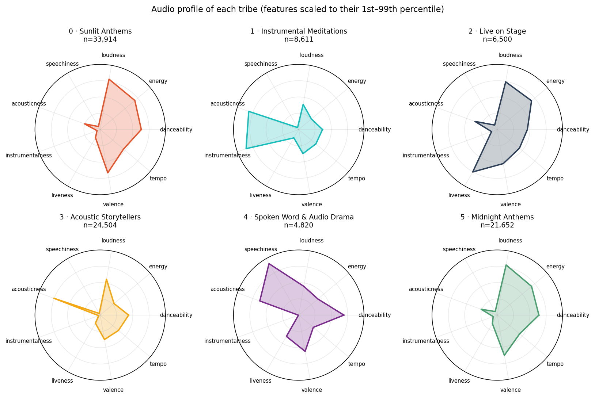
Audio profile of each tribe
Each small chart shows one tribe's average on nine audio features: the ten continuous features minus duration, each scaled from its 1st to its 99th percentile. Sunlit Anthems is the largest tribe with 33,914 tracks (33.9%), followed by Acoustic Storytellers with 24,504 (24.5%) and Midnight Anthems with 21,652 (21.7%). The smaller tribes are Instrumental Meditations with 8,611 (8.6%), Live on Stage with 6,500 (6.5%) and Spoken Word & Audio Drama with 4,820 (4.8%). The shapes match the names: a speechiness spike for Spoken Word, a liveness spike for Live on Stage, and high acousticness plus instrumentalness for Instrumental Meditations.
In raw units, Sunlit Anthems averages energy 0.69, loudness −7.7 dB and valence 0.67. Instrumental Meditations has instrumentalness 0.81 at −17.0 dB. Acoustic Storytellers pairs acousticness 0.75 with near-zero instrumentalness (0.02), which means acoustic backing plus a voice. The Sunlit and Midnight Anthems charts look almost identical because mode, the feature that splits them, is not on the radar. Per-tribe silhouette is highest for Spoken Word & Audio Drama (0.23) and lowest for Live on Stage (0.07).
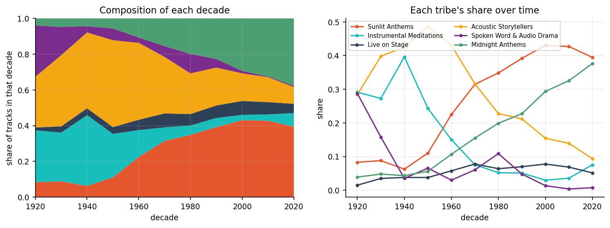
A century of tribes
The left panel stacks the six tribes to show the make-up of each decade, and the right panel plots each tribe's share as its own line. Because the sample is stratified by decade, shares can be compared across eras. Acoustic Storytellers (amber) dominate the mid-century, with 48.6% of the 1950s, and fall to 9.4% by the 2020s. Instrumental Meditations (teal) peak in the 1940s at 39.6% and end at 7.6%.
The two anthem tribes together rise from 12.2% of the 1920s to 77.1% of the 2020s. Within that rise the minor-key Midnight Anthems (green) grows fastest, from 3.9% to 37.7%, which the report calls consistent with the documented drift of popular music toward minor tonality. Spoken Word & Audio Drama (purple) has two peaks: 28.7% in the 1920s, which the report links to early recorded readings, and 10.9% in the 1980s, linked to the German radio-play boom. After that it almost vanishes. Sunlit Anthems (red-orange) peaks at 43.0% in the 2000s and dips to 39.4% in the 2020s.
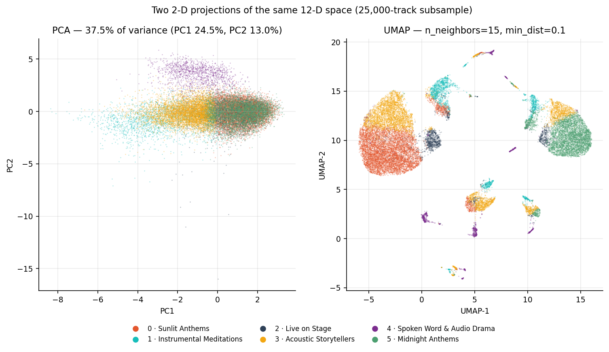
PCA versus UMAP
PCA, the linear baseline, keeps only 37.5% of the variance in two components (PC1 24.5%, PC2 13.0%). PC1 is an acoustic-to-electric axis (energy, loudness and danceability against acousticness), and PC2 is talk and groove (speechiness, danceability and valence against duration). The PCA result is one dense cloud, and only Spoken Word & Audio Drama (purple) breaks away. UMAP (n_neighbors = 15, min_dist = 0.1) spreads the same songs into two large landmasses and many smaller islands.
UMAP keeps local neighbourhoods far better. Its trustworthiness at k = 15 on a 5,000-track subsample is 0.938, against 0.784 for PCA, so UMAP is used for the website map. The cost is that distances between well-separated UMAP islands carry no quantitative meaning, only neighbourhoods do. The UMAP panel has two large landmasses, one led by Sunlit Anthems (red-orange) and one by Midnight Anthems (green), each with Acoustic Storytellers above it. Figure 36 shows that this is the major/minor key split.
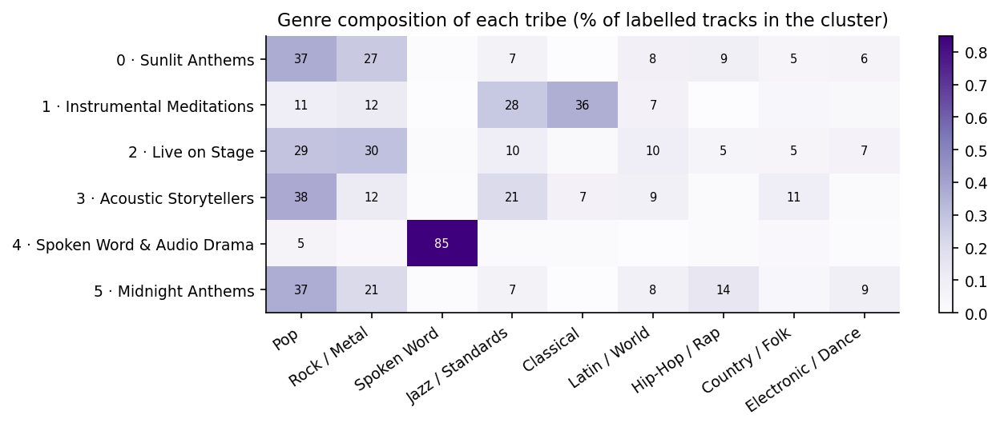
Do tribes match genres?
Genres were never used to build the tribes, only to check them afterwards. Spotify's raw genre strings are too fine-grained, so artist genres were mapped by keyword into nine coarse buckets, and 77.2% of tracks received a bucket. The plan's test was that a tribe that is 70% or more one genre has rediscovered genre from sound alone. Only Spoken Word & Audio Drama passes, with 84.9% spoken-word labels.
Every other tribe is a mix. Instrumental Meditations is 36% classical and 28% jazz and standards, and the anthem and storyteller tribes each mix pop, rock, Latin and standards, with Pop the largest bucket in all three. Midnight Anthems holds more hip-hop than Sunlit Anthems (14% vs 9%). Overall agreement is weak (NMI = 0.144). The report reads this as audio features capturing production and instrumentation rather than genre, a result about the data and not a failure of the method.
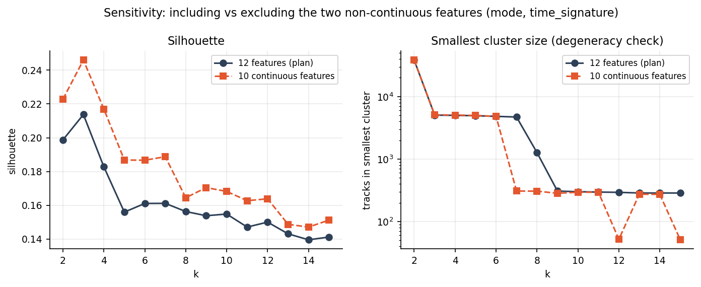
Sensitivity: dropping mode and time_signature
The mode feature is binary and time_signature is a near-constant small integer, yet after standardization each carries as much weight as energy. The whole sweep was therefore repeated on the 10 continuous features, still using the shared scaler. The left panel shows the 10-feature run (dashed orange) above the 12-feature run (solid dark blue) on silhouette at every k, with 0.187 vs 0.161 at k = 6. The right panel tracks the size of the smallest cluster as a check for degenerate clusters.
In the 12-feature run the smallest cluster stays between 4,706 and 5,047 tracks from k = 3 to k = 7. It then drops to 1,268 at k = 8 and to about 300 from k = 9. In the 10-feature run it already collapses at k = 7 (308 tracks), so k = 6 is the largest k at which neither run has a collapsed cluster. The elbow also falls at k = 6 for both. The 10-feature run also improves Davies–Bouldin (1.614 vs 1.788) and genre NMI (0.157 vs 0.144). The two solutions agree moderately (ARI = 0.493). The 10-feature run replaces the major/minor pair with a split between high-energy, fast, loud tracks and slower, high-valence danceable ones.
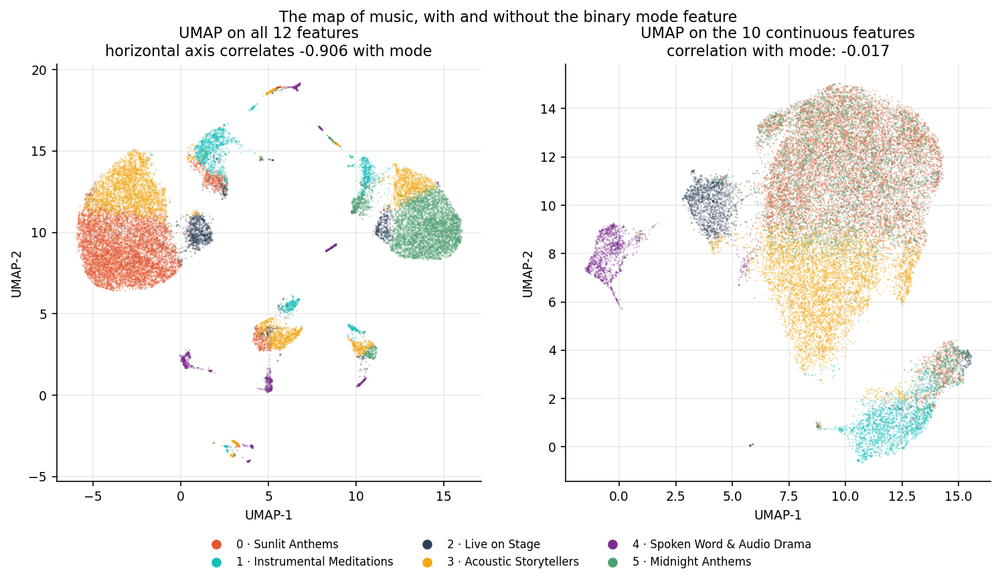
The map with and without mode
On the 12-feature map the horizontal axis correlates −0.906 with mode. It divides the corpus into a 60,278-track major continent (99.2% major) and a 39,723-track minor continent, each holding a copy of every tribe. On the 10-feature map that correlation falls to −0.017. The twin anthem tribes merge, and a single acoustic-to-electric gradient appears.
In the right panel, Sunlit Anthems and Midnight Anthems mix into one large cloud, while Live on Stage and Spoken Word & Audio Drama form their own separate islands. The 12-feature solution stays the module's main result for two reasons. It is what the project plan specifies, and it uses the same feature space as the DJ Transition Engine's k-NN graph, so the map and the graph stay consistent. Both projections are exported in map_data.json, and the report notes that the 10-feature map is the one where the tribes are easy to read.
Anomalies, observations and patterns
- Observation: DJ Transition Engine: the song graph joins all 100,001 songs into one connected network, so a path exists between any two songs. All 1,000 random song pairs were reachable, with paths of 9.324 hops on average (median 9, maximum 19). Similar songs need few steps: two Ed Sheeran tracks connect in 3 hops (total distance 1.665). Adele's Someone Like You to Avicii's Wake Me Up (EDX Miami Sunset Remix) takes 9 hops (13.279), and The Beatles' Hello, Goodbye to Dua Lipa's Levitating takes 13 hops (14.968).
- Pattern: DJ Transition Engine: no single audio feature dominates a typical transition. Along the 1,000 random paths, the top eight features (duration_ms, tempo, danceability, loudness, valence, liveness, energy, acousticness) each move a broadly similar amount, about 2.4 to 3.0 standardised units summed over the hops. Track length (duration_ms) comes out on top. The more discrete or heavily skewed features, speechiness, instrumentalness, time_signature and mode, move far less (about 0.9 to 2.1).
- Anomaly: Part of the "music" catalogue is not music. The Sound Timeline found 22,317 tracks (4.26% of the full catalogue) that are audiobooks, German-language radio drama (Hörspiel), motivational recordings and comedy. In the 1980s alone, 7,830 such tracks were removed, over 10% of that decade. Removing them made most of the raw rise in speechiness disappear (raw and cleaned yearly means correlate at only 0.434) and changed which decade had the narrowest tempo spread (the 1960s before cleaning, the 1920s after). The Music Tribes Explorer picked up the same kind of content from sound alone: its Spoken Word & Audio Drama tribe is 84.9% spoken-word labels.
- Observation: Sound Timeline: once non-music tracks are removed, speechiness stays nearly flat, around 0.06 to 0.09, for roughly 90 years. The one real change starts around 2010, when the yearly mean rises from about 0.077 to 0.132 by 2021. A KS test comparing 1960-2009 with 2012-2021 gives D = 0.196, a moderate shift. This is consistent with the mainstream rise of rap and hip-hop, but genre was not tested directly, so it is not shown to be the cause.
- Observation: Sound Timeline: across 2,697 matched live and studio versions of the same song, the live version has more energy in 72% of pairs (mean difference +0.087) but is more popular in only 15% (mean difference −15.7 points on a 0 to 100 scale). Release timing does not explain the gap: the gap in release years barely relates to the popularity difference (r = 0.018, p = 0.36).
- Pattern: Sound Timeline: the features changed largely on their own separate schedules, not as one shared shift. Acousticness tipped around 1969 (95% CI 1969.05-1969.34), though the narrow interval reflects the large sample, not proof that the S-curve is the right shape. The share of instrumental tracks (instrumentalness above 0.5) peaked at 49.1% in 1946, fell to 4.8% in 2003 and recovered to 17.7% by 2021. Tempo spread was widest in the 1940s (IQR 47.0 BPM) and narrowest in the 1920s (32.9 BPM). Liveness showed no century-scale change. A raw correlation of −0.85 between acousticness and tempo falls to −0.04 once year-to-year changes are compared, and PCA on those changes needs three components to reach 80% of the variance.
- Pattern: Music Tribes Explorer: the tribes shift clearly over the decades. Acoustic Storytellers make up 48.6% of the 1950s but only 9.4% of the 2020s. Instrumental Meditations peak at 39.6% in the 1940s and end at 7.6%. The two anthem tribes grow from 12.2% of the 1920s to 77.1% of the 2020s, and the minor-key Midnight Anthems grow fastest, from 3.9% to 37.7%. Spoken Word & Audio Drama has two peaks: 28.7% in the 1920s and 10.9% in the 1980s.
- Observation: Music Tribes Explorer: sound alone does not rediscover genre. Under the threshold test proposed in the project plan (a tribe counts as a genre match if 70% or more of it is one genre), only Spoken Word & Audio Drama passes, at 84.9%. Instrumental Meditations is 36% classical and 28% jazz and standards, and the anthem and storyteller tribes are each a mix of pop, rock, Latin and standards. Overall agreement is weak (NMI = 0.144). Silhouette scores are low (about 0.16), so the tribes are regions of a continuum rather than separate islands. Audio features capture production and instrumentation, not genre.
- Anomaly: Music Tribes Explorer: two of the six tribes are one sound split by musical key. Sunlit Anthems (100% major) and Midnight Anthems (100% minor) are 2.12 apart across all 12 features but only 0.232 apart on the 10 continuous ones, while the next-closest pair on those ten features is 2.688 apart. The binary mode feature also shapes the 12-feature UMAP map: its horizontal axis correlates −0.906 with mode, splitting the map into a major-key and a minor-key "continent". Dropping mode and time_signature improves every internal measure (silhouette 0.187 vs 0.161), and the map's correlation with mode falls to −0.017. The 12-feature version was kept as the main result because it matches the project plan and the DJ engine's feature space.